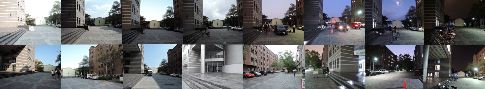
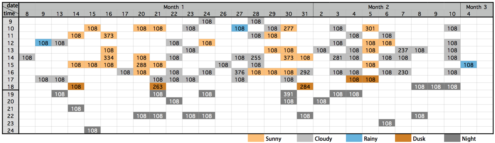

| Filename | Descriptor | Images | Resolution | Size | Description |
|---|---|---|---|---|---|
| NTU_Dataset.zip | NTU_Dataset_Descriptor.zip | 14275 | 1440×1080 | 6.2G | All the resized images we used |
| Raw_Dataset.zip | --------------- | 14275 | 4000×3000 | 27.2G | Contact us for dowmload link |
NTU Long-Term Positioning Dataset

Description:
- Single-scene, long-term dataset
- Cover more than a month
- 5 different illuminance situations
- 9720 images with ground truth
- 14275 images in total

Download:
Citation:
- If you use the dataset, please cite our paper:
- Kuan-Wen Chen, Chun-Hsin Wang, Xiao Wei, Qiao Liang, Chu-Song Chen, Ming-Hsuan Yang, and Yi-Ping Hung, "Vision-Based Positioning for Internet-of-Vehicles,” IEEE Transactions on Intelligent Transportation Systems, 2016.
Contact us:
- If you have any questions, please feel free to contact us by E-mail: clarenceliang@foxmail.com